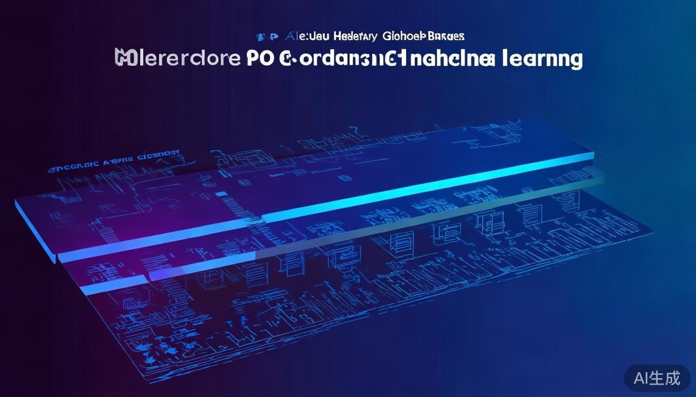

机器学习与深度学习基础
引言
本章是AI应用开发的核心理论地基，跳过零散概念堆砌，从范式分类到模型原理、从工程方法到代码实战逐层拆解。学完你能区分三类机器学习适用场景，看懂CNN、Transformer等主流架构的核心逻辑，独立跑通PyTorch手写数字识别任务，建立从传统机器学习到大模型的完整认知链路。
机器学习三大核心范式

机器学习的本质是让算法从数据中自动归纳规律，而非人工编写硬编码规则，根据监督信号的不同可分为三类主流范式，分别对应不同的业务落地场景。
- 监督学习：用带标注的训练数据拟合输入到输出的映射，常见任务包括分类（如垃圾邮件识别、疾病诊断）和回归（如房价预测、销量预估），代表算法有逻辑回归、决策树、XGBoost。
- 无监督学习：用无标注数据挖掘内在结构，常见任务包括聚类（如用户分群、异常检测）、降维（如数据可视化、特征压缩），代表算法有K-Means、PCA、DBSCAN。
- 强化学习：通过智能体与环境交互获得奖励信号，反复试错学习最优策略，常见应用包括游戏AI、机器人控制、推荐系统排序优化，代表算法有DQN、PPO。
三类范式没有绝对优劣，工业界落地通常会组合使用：比如短视频推荐场景，先用无监督学习做用户 embedding 聚类，再用监督学习做初始点击率预估，最后用强化学习做长期用户留存优化。
特征工程与模型评估
特征工程是将原始数据转化为模型可输入格式的过程，直接决定传统机器学习的效果上限，行业内常说“数据和特征决定了机器学习的上限，模型和算法只是逼近这个上限”。
- 特征处理步骤：缺失值填充（数值型用中位数、类别型用众数）、类别特征编码（独热编码、标签编码）、数值特征标准化（Z-score、Min-Max缩放）、特征交叉（如“用户年龄×商品品类”组合特征）。
- 传统特征工程工具：Python生态常用Pandas做数据清洗，Scikit-learn做特征预处理，Featuretools做自动特征生成。
模型评估需要选择匹配任务的指标，避免单一准确率带来的误导，常见任务的核心评估指标如下：
| 任务类型 | 核心评估指标 | 适用场景说明 |
|---|---|---|
| 二分类 | AUC-ROC、F1-score、精确率/召回率 | 疾病检测、欺诈识别等正负样本不均衡场景 |
| 多分类 | 混淆矩阵、Top-K准确率 | 图像分类、文本分类场景 |
| 回归 | MAE、RMSE、R² | 销量预测、价格预估场景 |
| 聚类 | 轮廓系数、ARI | 用户分群、异常检测场景 |
评估时必须区分训练集、验证集、测试集，通常按7:2:1拆分，严禁用测试集数据调参，避免模型过拟合导致上线后效果暴跌。
神经网络：从感知机到反向传播
神经网络的最小单元是1957年提出的感知机，本质是一个二分类线性模型，对输入特征做加权求和后通过阶跃函数输出分类结果，但单层感知机无法解决异或这类非线性可分问题，直接导致了第一次AI寒冬。
多层感知机（MLP）在输入层和输出层之间加入了隐藏层，并用Sigmoid、ReLU等非线性激活函数替代阶跃函数，理论上可以拟合任意复杂的连续函数，解决了非线性分类问题。一个标准的三层MLP结构为：输入层（接收特征向量） 隐藏层（做非线性变换） 输出层（输出预测结果）。
多层网络的训练依赖反向传播算法：先通过前向传播计算预测值和真实标签的损失（如交叉熵损失、MSE损失），再从输出层到输入层逐层计算每个参数的梯度，最后用梯度下降法更新参数，最小化损失值。训练时常用的优化器包括SGD、Adam，学习率通常初始设置为1e-3，批量大小（batch size）设为32或64。
CNN：卷积操作与图像识别
卷积神经网络（CNN）是专门为网格结构数据（如图像、音频频谱）设计的架构，解决了全连接网络处理图像时参数爆炸、丢失空间信息的问题，1998年提出的LeNet-5是首个成功商用的CNN，用于银行手写支票识别。
CNN的核心组件包括三类：
- 卷积层：用固定大小的卷积核（常用3×3、5×5）在输入图像上滑动做内积计算，提取边缘、纹理、形状等局部特征，相比全连接层参数共享机制可将参数量降低90%以上。
- 池化层：对卷积输出做下采样（常用2×2最大池化），保留核心特征的同时降低特征图尺寸，提升模型鲁棒性。
- 全连接层：在网络末端将二维特征图展平为一维向量，输出最终分类结果。
2012年提出的AlexNet在ImageNet图像识别比赛中将Top-5错误率从26%降到15%，引爆了深度学习浪潮，后续演进的VGG、ResNet、EfficientNet等架构广泛应用于人脸识别、自动驾驶、医学影像诊断等场景，其中ResNet提出的残差连接解决了深层网络梯度消失问题，可训练深度超过1000层。
RNN/LSTM与序列建模
循环神经网络（RNN）是专门为序列数据（如文本、语音、时间序列）设计的架构，核心是引入了隐藏状态存储历史信息，处理每个时间步的输入时会结合上一步的隐藏状态，天然适合处理变长序列。但原生RNN存在长程梯度消失问题，当序列长度超过20步时，很难记住早期的信息，比如处理长文本时无法关联段落开头和结尾的逻辑。
长短期记忆网络（LSTM）通过引入门控机制解决了长程依赖问题，每个单元包含输入门、遗忘门、输出门三个结构：遗忘门决定丢弃哪些历史信息，输入门决定存储哪些新信息，输出门决定输出哪些信息到下一个时间步，可有效处理长度超过100步的序列。后续简化版本GRU将三个门合并为更新门和重置门，参数量减少30%，训练速度更快。
RNN/LSTM曾广泛应用于机器翻译、语音识别、股票预测等场景，比如早期的谷歌翻译、百度语音识别都基于LSTM架构，但由于其串行计算的特性，无法并行处理长序列，逐步被Transformer架构替代。
注意力机制与Transformer架构
注意力机制的核心灵感来自人类视觉：看一张图片时会把注意力聚焦在核心区域，而非平均关注所有像素。2017年谷歌发表《Attention Is All You Need》提出Transformer架构，完全基于自注意力机制构建，摒弃了RNN的串行结构，可并行处理整个序列，训练速度提升数十倍，是当前所有大语言模型的基础架构。
自注意力机制通过计算序列中每个token和其他所有token的关联权重，动态聚合上下文信息，比如处理句子“苹果发布了新手机，它的续航很好”时，模型会给“它”和“苹果”分配更高的权重，正确理解指代关系。Transformer的核心组件包括多头自注意力层、前馈神经网络层、残差连接和层归一化，编码器和解码器均由上述组件堆叠而成。
基于Transformer衍生出两类主流模型：BERT为代表的编码器-only架构，擅长文本理解类任务（如分类、实体识别）；GPT为代表的解码器-only架构，擅长文本生成类任务（如对话、写作），当前主流的闭源大模型（GPT-6 系列、Claude）和开源大模型（Llama、Qwen、DeepSeek）均采用解码器-only架构。
PyTorch极简实战：手写数字识别
本节基于PyTorch 2.0+版本实现MNIST手写数字识别任务，MNIST是包含7万张28×28像素手写数字图片的标准数据集，是深度学习入门的“Hello World”任务，整体代码不超过50行，在普通CPU上10分钟即可跑完。
首先安装依赖并导入库，然后构建简单的CNN模型：
# 安装依赖：pip install torch torchvision
import torch
import torch.nn as nn
from torch.utils.data import DataLoader
from torchvision import datasets, transforms
# 数据预处理：转张量、归一化
transform = transforms.Compose([transforms.ToTensor(), transforms.Normalize((0.1307,), (0.3081,))])
# 加载MNIST数据集
train_dataset = datasets.MNIST(root='./data', train=True, download=True, transform=transform)
test_dataset = datasets.MNIST(root='./data', train=False, download=True, transform=transform)
train_loader = DataLoader(train_dataset, batch_size=64, shuffle=True)
test_loader = DataLoader(test_dataset, batch_size=128, shuffle=False)
# 定义简单CNN模型
class SimpleCNN(nn.Module):
def __init__(self):
super().__init__()
self.conv1 = nn.Conv2d(1, 16, kernel_size=3, padding=1) # 第一层卷积：输入1通道，输出16通道
self.conv2 = nn.Conv2d(16, 32, kernel_size=3, padding=1) # 第二层卷积：输入16通道，输出32通道
self.pool = nn.MaxPool2d(2, 2) # 2×2最大池化
self.fc = nn.Linear(32*7*7, 10) # 全连接层输出10个数字类别
self.relu = nn.ReLU()
def forward(self, x):
x = self.pool(self.relu(self.conv1(x)))
x = self.pool(self.relu(self.conv2(x)))
x = x.flatten(1)
return self.fc(x)模型训练与评估代码如下：
device = torch.device("cuda" if torch.cuda.is_available() else "cpu")
model = SimpleCNN().to(device)
criterion = nn.CrossEntropyLoss() # 多分类交叉熵损失
optimizer = torch.optim.Adam(model.parameters(), lr=1e-3) # Adam优化器
# 训练5轮
for epoch in range(5):
model.train()
for images, labels in train_loader:
images, labels = images.to(device), labels.to(device)
optimizer.zero_grad() # 梯度清零
outputs = model(images)
loss = criterion(outputs, labels)
loss.backward() # 反向传播计算梯度
optimizer.step() # 更新参数
# 测试集评估
model.eval()
correct, total = 0, 0
with torch.no_grad():
for images, labels in test_loader:
images, labels = images.to(device), labels.to(device)
outputs = model(images)
_, predicted = torch.max(outputs.data, 1)
total += labels.size(0)
correct += (predicted == labels).sum().item()
print(f"Epoch {epoch+1}, 测试集准确率: {100*correct/total:.2f}%")正常训练5轮后，模型在测试集上的准确率可达98.5%以上，若使用GPU加速，训练时间可缩短至1分钟以内。
从深度学习到大模型的跃迁
传统深度学习模型通常是“一任务一模型”：针对特定任务标注专属数据集，从零开始或基于小模型微调训练，模型参数量通常在百万到千万级别，泛化能力差，换个任务就需要重新训练，比如做情感分析训练的模型无法直接用于实体识别。
大模型（即基础模型）的核心跃迁是“预训练+微调”范式：基于万亿级别的无标注文本、图像、音频数据做大规模自监督预训练，学习到通用的世界知识和逻辑推理能力，参数量达到十亿到万亿级别，之后只需少量领域数据做微调甚至不微调（零样本/少样本提示），即可适配下游数百种任务，无需重新训练模型。
大模型的能力涌现是和传统深度学习最核心的区别：当参数量突破某个阈值（通常是百亿参数级别）后，模型会突然具备小模型没有的能力，比如逻辑推理、多轮对话、代码生成、跨模态理解，这种能力无法通过小模型堆叠训练数据获得。当前大模型已经从单模态文本生成演进到多模态理解（如 GPT-6 系列支持图像输入、Sora 与可灵等支持视频生成），正在重构内容生产、软件开发、客户服务等几乎所有行业的工作流。
小结与练习
核心收获
- 机器学习分为监督、无监督、强化三类范式，分别适配不同业务场景，特征工程和科学的评估方法是模型落地的核心前提，不能盲目追求复杂模型。
- 从MLP到CNN、RNN再到Transformer，深度学习架构的演进始终围绕“降低参数量、提升长程建模能力、支持并行计算”三个方向，Transformer是当前大模型的核心基础架构。
- 大模型相比传统深度学习实现了范式跃迁，通过大规模预训练获得通用能力和涌现效应，可通过提示工程快速适配多类任务，无需针对每个任务单独建模。
动手练习
- 运行本节提供的PyTorch手写数字识别代码，将第一层卷积的输出通道从16改为32，记录测试集准确率的变化，尝试将训练轮数增加到10轮，观察是否出现过拟合。
- 用Scikit-learn加载内置的鸢尾花分类数据集，拆分训练集测试集，分别用逻辑回归和决策树训练模型，计算两个模型的F1-score并对比效果。
- 用300字以内的通俗语言解释Transformer自注意力机制的工作原理，要求不使用公式，举一个生活中的类比。
扩展阅读方向
建议阅读原论文《Attention Is All You Need》及李沐老师的《动手学深度学习》PyTorch版对应章节，重点理解Transformer的位置编码、多头注意力的计算细节，可进一步跟着开源教程跑通一个7B参数开源大模型（如Qwen2-7B）的本地部署流程，直观感受大模型的推理能力。
本文由本站 AI 创作整理，内容基于公开知识/官方资料提炼，信息请以官方发布为准； 涉及的历史事件、产品与数据均可在公开渠道查证，本站不编造来源。引用外部内容遵循其原始许可，标注出处即可。